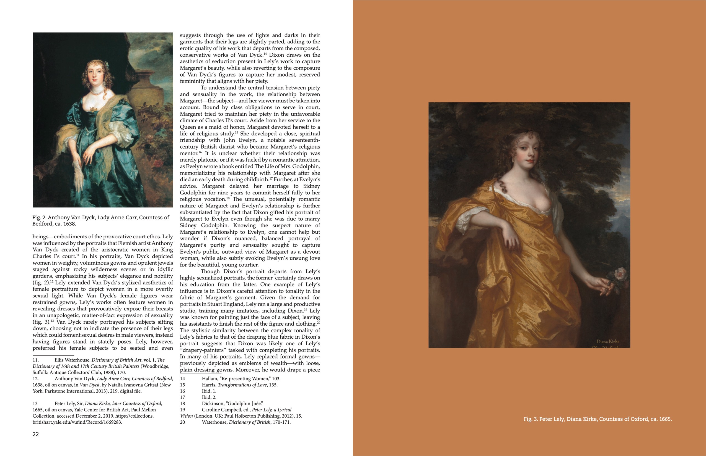

A “program” in architecture is a list of things that a building has to include: bathrooms, bedrooms, offices, closets, etc. The challenge of the architect then is figuring out how to squeeze all of these spaces into a compact and cohesive package.
Publication design is similar. The greatest thrill, and greatest challenge, of designing magazines is figuring out how all of these pieces click together. My personal objective was to not let the text-dense essays overwhelm the actual art, something I did by sampling colors found in the artwork and incorporating them into the spreads themselves.
The folks at Stanford seemed happy with the final product and I’m proud of it too, so here are a few of my favorite spreads!
